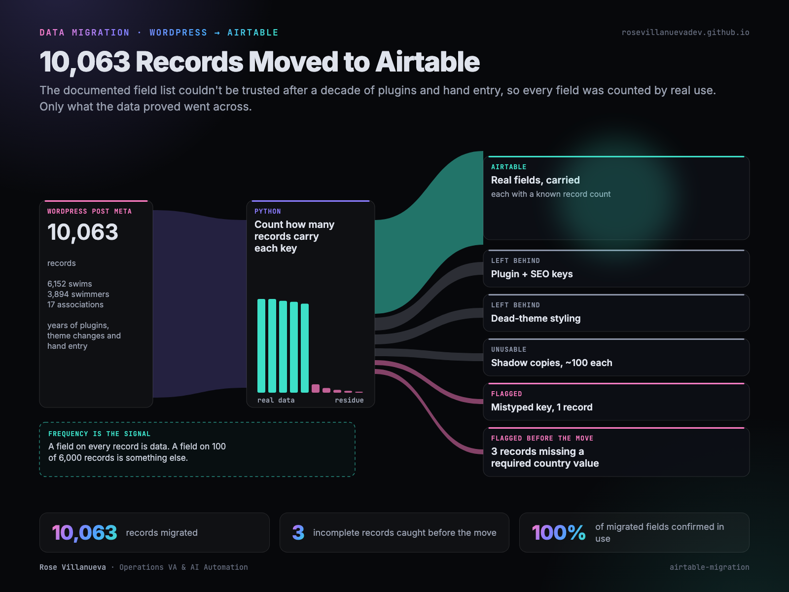

Schema discovery and migration into Airtable
Mapping ten thousand records out of WordPress post meta by counting how often each field is actually used, which is what separated real data from a decade of residue.

Project scope
6,152 swims, 3,894 swimmers, 17 associations. 10,063 records held as WordPress post meta, accumulated over years of theme changes, plugin installs and hand entry.
The documented field list was not a reliable guide to what the data contained. Mapping from it would have carried the residue across and missed the gaps.
Constraints
- No trustworthy schema. Post meta has no enforced structure.
- Silent loss is the failure mode. A missing field does not error, it just arrives empty.
- Too many records to inspect individually.
Approach
Rather than mapping the documented fields, enumerate every meta key actually present per post type and count how many records carry it. Frequency is the signal. A field on every record is data. A field on a hundred records out of six thousand is something else.
Implementation
What the counts exposed:
- Real fields against residue. Genuine data sat alongside keys left behind by editors, an SEO plugin and a retired theme.
- A coverage gap. 6,152 swims but only 6,149 carried a country value. Three records were missing it, and nothing would have reported that.
- Shadow fields were unusable. Underscore-prefixed duplicates existed but covered around a hundred records each, so none could serve as a fallback.
- Hand-entry drift. A field name with a stray space and different capitalization appeared exactly once, on a single record. Invisible in any field list.
- One table was almost entirely junk. 17 real records, each carrying twelve styling keys from a dead theme.
The same method ran on a different system three months earlier. Enumerate what is actually in use, count it, let frequency separate data from residue. That makes it a technique rather than a one-off.
Result
- Every field carried across was one confirmed in use, with a known record count.
- The three incomplete records were found before migration rather than discovered afterwards.
- A decade of styling residue stayed behind.